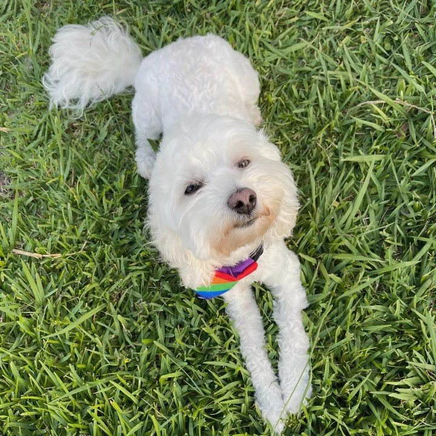
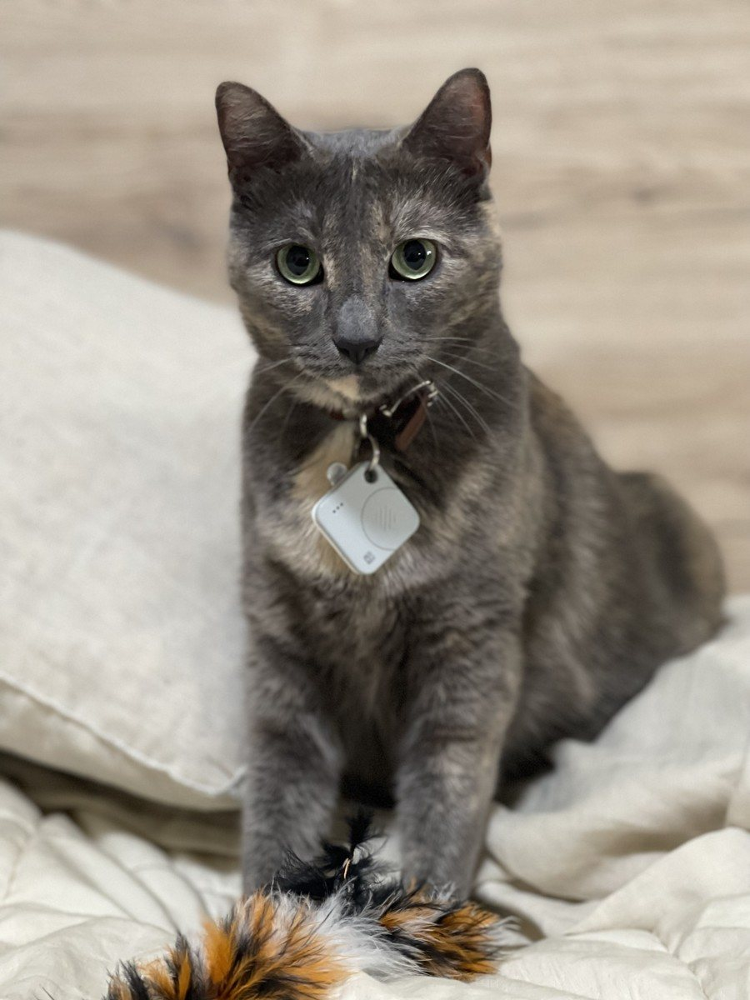
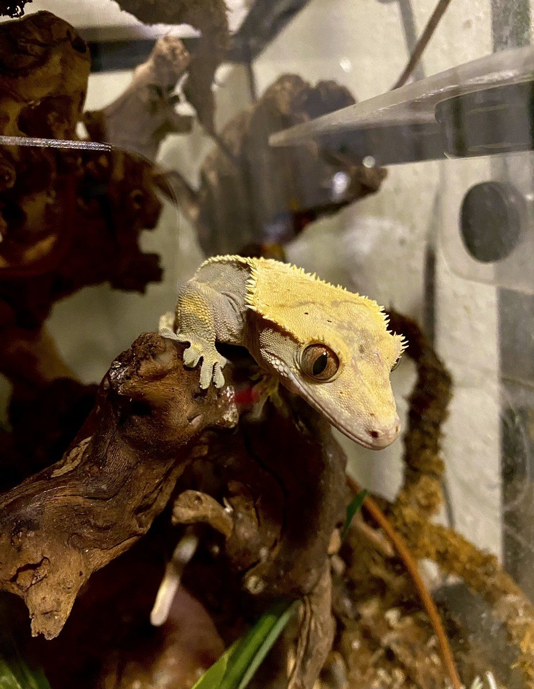
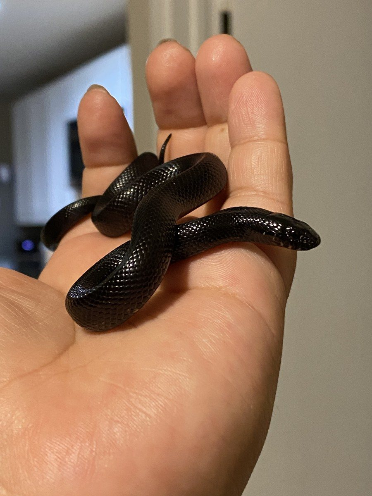
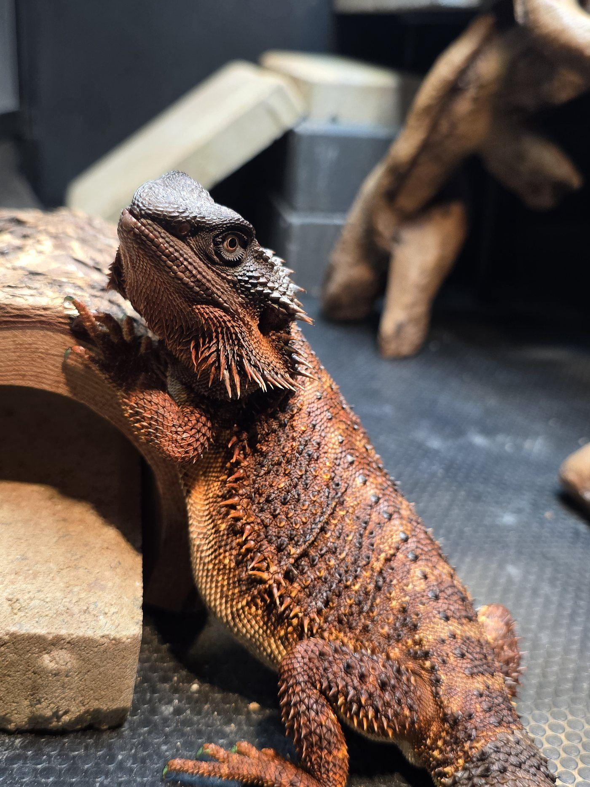

About me · demand-generation marketer · builder
I make unfamiliar problems easier to understand.
A curious marketer who learns by building.
I’ve spent six-plus years in demand generation, usually translating a messy question into something a team can actually use. Outside work, I keep the same habit: find the thing I don’t understand, take it apart, and learn enough to make it clearer.

I learned to figure things out before I learned to call it a strength.
I’m the oldest in my family and the first to go to college. A lot of the time, there wasn’t a ready-made answer or a person nearby who had already done the thing. I got comfortable teaching myself: finding the useful source, testing what I thought I knew, and asking a better question when the first one was wrong.
That background still shows up in how I work. I don’t need to be the person who already knows everything. I need to be the person who can make the unknown smaller, explain what changed, and keep moving without pretending the uncertainty was never there.
I leave a trail someone else can follow.
When a project is unfamiliar, I start a small record: the question, the source, the first assumption, and the next check. That habit keeps learning from becoming a private exercise. It also makes handoffs calmer because the next person can see what was decided and what is still open, and where to look if the result changes.
It is why the portfolio includes receipts, failure notes, and boundaries alongside the polished result. The work is more useful when another person can pick it up without needing the entire backstory in a meeting.
The work is serious. The person doing it is still a person.
A few things explain the way I show up better than a list of adjectives.
The people and animals who keep the perspective honest.
Kymm and the five pets who run the house, whether we agreed to that or not.





The work is more than a set of project pages.
The projects show what I can make. The useful context is how I got there: I ask direct questions, learn what I need, and care about leaving people with a clearer decision than they had before.
Need a thoughtful builder?
The work is on the Projects page. The resume is below. LinkedIn is the easiest place to find me.
In a team, I am best positioned to own the messy middle between audience, spend, reporting, and the next decision: make the question clear, build the useful system, and explain what the result does and does not mean.